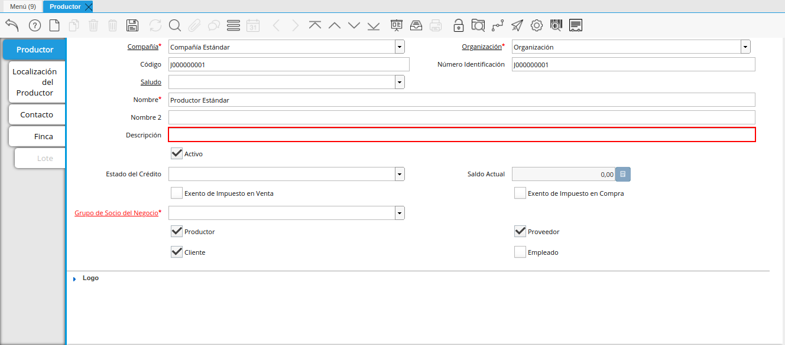
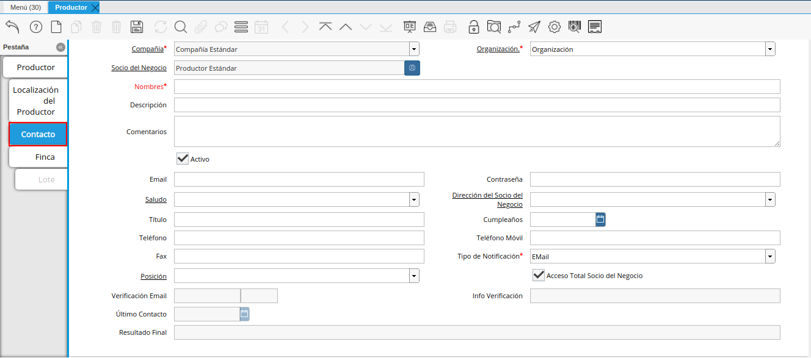

Registro de Productor
Ubique y seleccione en el menú de ADempiere, la carpeta “Gestión de Asistencia Técnica Agricola”, luego seleccione la carpeta “Configuración de Asistencia Técnica”, por último seleccione la carpeta “Configuración de Productor”. Finalmente, seleccione la ventana “Productor”.
Imagen 1. Menú de ADempiere

Podrá visualizar la ventana “Productor”, con los diferentes registros de productores que contiene ADempiere.
En esta ventana se registran los datos principales que la empresa requiere del productor. Cada uno de los campos con el símbolo (*) son obligatorios para el registro.
Imagen 2. Ventana Productor

Seleccione el icono “Registro Nuevo”, ubicado en la barra de herramientas de ADempiere, para registrar un nuevo productor.
Imagen 3. Icono Registro Nuevo de la Ventana Productor
Seleccione en el campo “Organización”, la organización para la cual se encuentra realizando el registro del productor.
La organización le permite definir la entidad legal ó una sub-unidad a la cual pertenece el productor, si la organización es (*), este estará disponible para todas las organizaciones al procesar documentos y transacciones, pero si por el contrario, ha seleccionado una organización diferente, este registro únicamente estará disponible para la organización seleccionada.
Imagen 4. Campo Organización de la Ventana Productor
Introduzca en el campo “Código”, el código correspondiente al registro del productor que se encuentra realizando.
El código es un dato único e irrepetible que protege la entrada de los registros, evitando la duplicidad de los mismos, generalmente se refiere al número de identificación que acredite la identidad de una persona natural una entidad jurídica, por ejemplo, una cédula de identidad o un RIF.
Imagen 5. Campo Código de la Ventana Productor
Podrá visualizar el número de identificación autogenerado a partir del campo Código en el campo “Número de Identificación”.
El número de identificación se refiere al número que acredita la identidad de una persona natural una entidad jurídica, por ejemplo, una cédula de identidad o un RIF, este campo mantiene incidencia en la generación de documentos fiscales como facturas, retenciones y comprobantes ARC.
Imagen 6. Campo Número Identificación de la Ventana Productor
Seleccione en el campo “Saludo”, el saludo a utilizar en la correspondencia enviada al productor.
Imagen 7. Campo Saludo de la Ventana Productor
Introduzca el nombre del productor en el campo “Nombre”.
El nombre se refiere a la razón social, siendo esta el nombre ó la denominación con la que está registrado en los documentos legales, el nombre es utilizado a nivel administrativo, formal y jurídico.
Imagen 8. Campo Nombre
Introduzca el nombre 2 del productor en el campo “Nombre 2”.
El nombre 2 varía su uso dependiendo de la naturaleza del productor, generalmente se utiliza para colocar la denominación comercial.
Imagen 9. Campo Nombre 2 de la Ventana Productor
Introduzca una breve descripción referente al productor en el campo “Descripción”.
La descripción no es un campo obligatorio,sin embargo, le permite dejar descripciones o notas de interés para el registro.

Imagen 10. Campo Descripción
Seleccione el estado de crédito del productor en el campo “Estado de Crédito”.
El estado del crédito no es un campo obligatorio, sin embargo, le permite definir el comportamiento para la gestión del crédito del productor, actúa conjuntamente con el campo Saldo Actual, este puede variar entre las siguiente opciones dependiendo de las necesidades:
Sin Verificación de Crédito: Establecido de forma manual, omite la evaluación para los productores a los que no se evalúa el crédito, equivalente a Sin límite de Crédito.
Crédito Correcto: Activa la gestión de crédito por estar dentro del límite de cŕedito.
Crédito Verificación: Es establecido de forma automática por ADempiere al evaluar el crédito, cuando el saldo actual está por encima del % de crédito en verificación (por defecto es 90%) del límite de crédito pero no alcanza el 100%.
Crédito Retenido: Es establecido de forma automática por ADempiere al evaluar el crédito, cuando el saldo actual está por encima del límite de crédito, bloqueando la posibilidad de completar ordenes de ventas, completar facturas y emitir entregas.
Crédito Detenido: Establecido de forma manual, bloqueando la posibilidad de completar ordenes de ventas, completar facturas y emitir entregas.
Imagen 11. Campo Estado de Crédito
Podrá visualizar el saldo actual que posee el productor en el campo “Saldo Actual.
El saldo actual es un campo solo lectura, actualizado de forma automática, aumentando o disminuyendo al emitir cuentas por cobrar o cuentas por pagar, controlando el estado de crédito.
Imagen 12. Campo Saldo Actual
Seleccione el checklist “Exento de Impuesto en Venta”.
Exento de Impuesto de Venta, no es un campo obligatorio, por defecto está establecido en falso, permite la omisión de impuestos al generar ordenes de ventas, es decir si un producto es gravado, hará una excepción para este productor, emitiendo la orden de venta con el producto en cuestión con impuesto (0%).
Imagen 13. Campo Exento de Impuesto en Venta
Seleccione el checklist “Exento de Impuesto en Compra”, para definir al productor como exento de impuesto.
Exento de Impuesto de Compra, no es un campo obligatorio, por defecto está establecido en falso, permite la omisión de impuestos al generar ordenes de compras, es decir si un producto es gravado, hará una excepción para este productor, emitiendo la orden de compra con el producto en cuestión con impuesto (0%).
Imagen 14. Campo Exento de Impuesto en Compra
Seleccione el grupo de socio del negocio en el campo “Grupo de Socio del Negocio”.
El grupo de socio del negocio, permite categorizar sus productores de una forma específica, lo cual es eficiente a la hora de emitir asientos contables y reportes, para entenderlo mejor veamos el siguiente ejemplo:
Imagen 15. Campo Grupo de Socio del Negocio
Por defecto se encuentran tildados los checklist “Productor”, “Proveedor” y “Cliente”, considerando que un productor puede ser proveedor o cliente de la organización en la cual se encuentra realizando el registro.
Imagen 16. Checklist Productor, Proveedor y Cliente


Note
Recuerde guardar el registro de los campos de la pestaña “Productor”, antes de seleccionar cualquier otra pestaña de la ventana “Productor”. El registro se guarda seleccionando el icono “Guardar Cambios”, ubicado en la barra de herramientas de ADempiere.
Pestaña Localización del Productor
La localización de un productor es muy importante por diferentes motivos, ya que las transacciones de ventas serán realizadas al mismo, en esta pestaña se deben registrar con exactitud los datos de la dirección del mismo.
Seleccione la pestaña “Localización” que se encuentra ubicada del lado izquierdo de la ventana productor.
Imagen 17. Pestaña Localización

Introduzca en el campo “Localización / Dirección”, la dirección de localización del productor con ayuda del identificador.
Imagen 18. Campo Localización / Dirección
Seleccione en el campo “País”, el país donde se encuentra domiciliado el productor que esta registrando.
Imagen 19. Campo País
Seleccione en el campo “Estado”, el estado donde se encuentra domiciliado el productor que esta registrando.
Imagen 20. Campo Estado
Seleccione en el campo “Ciudad”, la ciudad donde se encuentra domiciliado el productor que esta registrando.
Imagen 21. Campo Ciudad
Introduzca la dirección detallada del productor en el campo “Dirección 1” y seleccione la opción “OK”.
Imagen 22. Campo Dirección 1


Introduzca en el campo “Teléfono”, el número de teléfono local para contactar al productor.
Imagen 23. Campo Teléfono

Introduzca en el campo “Teléfono Móvil”, el número de teléfono móvil para contactar al productor.
Imagen 24. Campo Teléfono Móvil

Introduzca en el campo “Fax”, el fax para contactar al productor.
Imagen 25. Campo Fax

Introduzca en el campo “ISDN”, el ISDN para contactar al productor.
Imagen 26. ISDN

Podrá apreciar tildados los checklist “Dirección Entregar-A”, “Dirección Facturar-A”, “Dirección Pagar-Desde” y “Dirección Remitir-A”, indicando cada uno de ellos un comportamiento diferente.
El checklist “Dirección Entregar-A” establece la localización ingresada como la dirección para embarcar los bienes.
Imagen 27. Campo Dirección Entregar-A
El checklist “Dirección Facturar-A” establece la localización ingresada como la dirección para facturar.
Imagen 28. Campo Dirección Facturar-A
El checklist “Dirección Pagar-Desde” establece la localización ingresada como la dirección desde donde paga las facturas el productor y donde son enviadas las cartas de morosidad.
Imagen 29. Campo Dirección Pagar-Desde
El checklist “Dirección Remitir-A” establece la localización ingresada como la dirección para el envío de los pagos.
Imagen 30. Dirección Remitir-A


Seleccione en el campo “Región de Ventas”, la región o área de ventas en la que se encuentra localizado el productor.
Imagen 31. Campo Región de Ventas
Note
Para conocer más sobre las regiones de ventas que puede tener una compañía u organización, visite el documento Registro de Región de Ventas, elaborado por ERPyA.

Warning
Recuerde guardar el registro de los campos cada vez que se vaya a posicionar en una pestaña de la ventana productor.
Pestaña Contacto
En esta pestaña se registran todos los datos de contacto que se posea el productor.
Seleccione la pestaña “Contacto” que se encuentra ubicada del lado izquierdo de la ventana productor, para proceder a llenar los campos necesarios.

Imagen 32. Pestaña Contacto
Warning
El contacto (Usuario) permite registrar las diferentes personas de contacto que tiene la empresa con el productor que esta registrando. Un ejemplo de esta pestaña puede ser, un jefe o persona de contacto por departamento para que a la hora de alguna venta de productos o servicios al productor, se contacte a la persona correspondiente.
Introduzca en el campo “Nombre”, el nombre completo de la persona de contacto con el productor que esta registrando.
Imagen 33. Nombre de Contacto
Introduzca en el campo “Descripción”, una breve descripción de la persona de contacto con el productor que esta registrando.
Imagen 34. Campo Descripción
Introduzca en el campo “Comentarios”, los comentarios o información adicional sobre el registro de la persona de contacto con el productor.
Imagen 35. Campo Comentarios
El checklist “Activo”, indica que el registro se encuentra activo en el sistema.
Imagen 36. Checklist Activo
Introduzca en el campo “Email”, el correo electrónico de la persona de contacto con el productor para las transacciones entre las empresas.
Imagen 37. Campo Email
Introduzca en el campo “Contraseña”, la contraseña de acceso del usuario.
Imagen 38. Campo Contraseña
Seleccione en el campo “Saludo”, la forma de saludar a la persona de contacto con el productor en los documentos a ser enviados.
Imagen 39. Campo Saludo
Seleccione en el campo “Dirección del Socio del Negocio, la dirección de ubicación de la persona de contacto con el productor.
Imagen 40. Campo Dirección del Socio del Negocio
Introduzca en el campo “Título”, el nombre del productor.
Imagen 41. Campo Título
Seleccione en el campo “Cumpleaños”, la fecha de nacimiento de la persona de contacto con el productor.
Imagen 42. Campo Cumpleaños
Introduzca en el campo “Teléfono”, el teléfono para localizar a la persona de contacto con el productor para las transacciones entre las empresas.
Imagen 43. Campo Teléfono de Contacto
Introduzca en el campo “Teléfono Móvil”, el teléfono móvil para localizar a la persona de contacto con el productor.
Imagen 44. Campo Teléfono Móvil
Introduzca en el campo “Fax”, el fax de contacto del productor.
Imagen 45. Campo Fax
Seleccione en el campo “Tipo de Notificación”, la forma de enviar notificaciones a la persona de contacto con el productor.
Imagen 46. Campo Tipo de Notificación
Seleccione en el campo “Posición”, la posición de trabajo de la persona de contacto con el productor.
Imagen 47. Campo Posición
Podrá apreciar el checklist “Acceso Total Socio del Negocio”, que al estar tildado indica que la persona de contacto con el productor posee acceso total a su rol.
Imagen 48. Campo Acceso Total Socio del Negocio


Warning
Recuerde guardar el registro de los campos cada vez que se vaya a posicionar en una pestaña de la ventana productor.
Pestaña Finca
Al seleccionar el productor en el registro de una finca, se carga de manera automática en la pestaña “Finca” de la ventana “Productor”, los datos registrados en la pestaña “Finca”, de la ventana “Finca”.
Imagen 49. Pestaña Finca de la Ventana Productor
Si el registro de la finca contiene información en la pestaña “Lote de Finca”, esta se carga de manera automática a la pestaña “Lote” de la ventana “Productor”.
Imagen 50. Pestaña Lote de Finca de la Ventana Productor